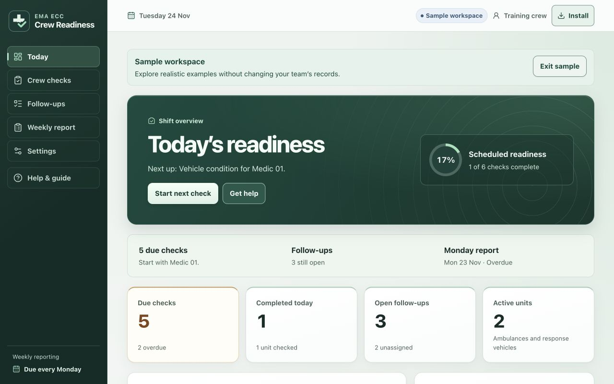

Field operations case study
EMA ECC
Crew Readiness
A single workspace for shift checks, follow-ups and the Monday report.
Open the dashboardToday’s readiness
Fictional sampleCheck queue
- Equipment checkTraining Unit ADue
- Vehicle checkTraining Unit BDue
The shift workflow
From first check to Monday sign-off
The brief called for regular medication, ambulance equipment and vehicle checks, followed by a report every Monday.
See what is due
Check queues use the active fleet and the intervals set by the supervisor.
Complete the check
Record counts, equipment condition and mileage. Jump to an unanswered item and add explanations where needed.
Follow up a finding
Stock differences and faults on a signed check create findings. The supervisor can assign a due date and record the resolution.
Review the week
Reports use saved checks and mileage. Supervisors add context and submit a dated snapshot with print and CSV exports.

In practice
Built for the next shift
Crews can start on a phone at the vehicle and use the same interface at a desk.
- Checklists by unit
- Unit type and crew level determine the expected equipment and quantities. Zero stock and not-applicable answers are recorded distinctly.
- Drafts during a weak connection
- The browser keeps an in-progress draft within the current tab’s session. Staff submit the signed record after reconnecting.
- Guided onboarding
- The Help view includes screenshots, a fictional sample workspace and installation instructions for supported devices.
- Team access
- Staff sign in through the dashboard. Supervisors can create invitation links and manage workspace access.
- Predictable Monday deadlines
- Windhoek time defines the reporting week and cutoff. A downloadable calendar event can remind staff to review the report.
Implementation and verification
A repeatable path to the shared record
Checklist scheduling, inventory and reporting use rules that can be tested separately. The server evaluates role permissions and checks that crew findings match the signed checklist.
- InterfaceReact and Vinext
Responsive views and browser-held drafts
- Workspace APIValidation and roles
Membership, write permissions and revision checks
- Stored recordsCloudflare D1
Checks, follow-ups and submitted report snapshots